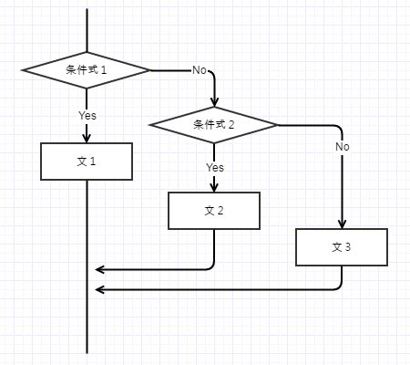

[C#] 制御文 - 分岐 (if, switch〜case, goto)
こんにちは。明月です。
今日からは制御文を勉強します。プログラムの制御文はC#だけではなく、C言語やJavaと同じです。そしてその中で制御文は大きく３つの形で分けます。
プログラムの流れで何の項目を選んで流すかを決める分岐制御、特定ブロックの流れを繰り返すループ、ループの流れを分岐するループ分岐があります。
その中で今日は分岐(if, switch〜case, goto)を勉強します。
if〜else if〜else文
if〜else if〜else文は真、偽によって処理する制御文です。
if(条件式1)
{
文１;
}
else if(条件式2)
{
//省略可能
文２;
}
else
{
//省略可能
文３;
}

using System;
using System.Collections.Generic;
using System.Linq;
using System.Text;
using System.Threading.Tasks;
namespace control
{
class Program
{
static void Main(string[] args)
{
//１つ目分岐
int a = 5;
if (a > 5)
{
Console.WriteLine("文１");
}
else if (a > 0)
{
Console.WriteLine("文２");
}
else
{
Console.WriteLine("文３");
}
//２つ目分岐
bool b = true;
if (b)
{
Console.WriteLine("文４");
}
else
{
Console.WriteLine("文５");
}
//３つ目分岐
int c = 10;
if(c == 10)
{
Console.WriteLine("文６");
}
Console.WriteLine("Press Any Key...");
Console.ReadLine();
}
}
}
上の例を説明すると変数「a」の値は「5」なので一つ目の分岐では「else if(a > 0)」を通って「Console.WriteLine("文２");」になります。
次の変数「b」の場合は「true」だから「if」の条件を満たします。それで「Console.WriteLine("文４");」に実行されます。
最後も「if」条件を満たすので「Console.WriteLine("文６");」を実行します。
switch文
「switch」は制御条件値が間に合うところを処理するマルチ制御文です。
switch(制御条件)
{
case 制御値１ :
文１;
break;
case 制御値２ :
文２;
break;
…
default :
文３;
break;
}

using System;
using System.Collections.Generic;
using System.Linq;
using System.Text;
using System.Threading.Tasks;
namespace control
{
class Program
{
static void Main(string[] args)
{
int a = 5;
switch (a)
{
case 5:
Console.WriteLine("文１");
break;
case 10:
Console.WriteLine("文２");
break;
default:
Console.WriteLine("文３");
break;
}
Console.WriteLine("Press Any Key...");
Console.ReadLine();
}
}
}
上の例を見ると変数「a」は「5」の値が格納されています。それで「switch」の「case 5」を通って「Console.WriteLine("文１");」を実行します。
C#の「switch」文は他の言語と違うところがあります。それはC++、Javaの場合は「switch〜case」に行って「break」を付けないことができます。「break」がなければ次の文に実行する処理になるがC#の場合はこの「case」の後に「break」が必須キーワードなので「break」を利用して次の段階に行く処理がありません。
goto文
「goto」文はラベルの部分に強制的に移動する制御文です。
そして「goto」文はプログラムの中で使わない制御文です。なぜならプログラムの中で「goto」文が多いなら性能(パフォーマンス)が悪くなるし、後でソース管理が大変になるからです。参考してください。
goto ラベル:
…
ラベル:
using System;
using System.Collections.Generic;
using System.Linq;
using System.Text;
using System.Threading.Tasks;
namespace control
{
class Program
{
static void Main(string[] args)
{
goto TEST;
Console.WriteLine("文１");
TEST:
Console.WriteLine("文２");
Console.WriteLine("Press Any Key...");
Console.ReadLine();
}
}
}
上の例を見ると実行中で「goto TEST」文にあうと「TEST」ラベルに移動ます。
今日は制御文の分岐に関して勉強しました。その中で「if」の場合はプログラムで一番多く使う制御なのでよく覚えて行きましょう。
- [C#] static2019/07/10 00:19:18
- [C#] クラス(class)とコンストラクタ、そしてnew(割り当て)2019/07/10 00:06:17
- [C#] プロパティ(property)2019/07/08 23:04:09
- [C#] アクセス修飾子(public, private, protected)2019/07/08 22:55:00
- [C#] メソッド(関数)とvoid型2019/07/07 23:12:30
- [C#] 制御文 - ループ分岐(break, continue)2019/07/07 22:54:13
- [C#] 制御文 - ループ(for, while, do〜while, foreach)2019/07/06 00:53:17
- [C#] 制御文 - 分岐 (if, switch〜case, goto)2019/07/06 00:38:29
- [C#] 演算子2019/07/05 00:12:42
- [C#] 配列とリスト(List)、 そしてArrayList2019/07/05 00:05:30
- [C#] 変数と定数2019/07/04 00:09:43
- [C#] データタイプとリテラル(literal)、 Nullable2019/07/04 00:01:12
- [C#] コメント2019/07/02 23:58:43
- [C#] 基本構造と「Hello world」2019/07/02 23:46:49
- [C#] IDE(統合開発環境)のインストール2019/07/01 23:58:20
- [Tools] Dbeaver(無料Sql queryブラウザツール)2021/04/28 18:26:49
- [Bootstrap] HTMLデザインのフレームワークのBootstrap紹介2020/07/30 19:06:36
- [Python] メール(smtplib)を送信する方法2020/07/27 18:38:43
- [Python] HttpConnection(requestsモジュール)でウェブサーバーで接続する方法2020/07/20 14:41:51
- [Python] Excel(openpyxl)を扱う方法2020/07/16 16:40:31
- [Python] ファイル圧縮、解凍(zipfile)する方法2020/07/14 19:14:22
- [Python] Apache cgiでPythonを使う方法2020/07/09 19:58:19
- [Python] Web serverを起動する方法(http.server)2020/07/09 00:13:13
- [Python] WebSocketを使う方法2020/07/07 17:29:18
- [Python] PythonとJavaのソケット通信する方法2020/07/03 18:35:50
- [Python] PythonとC#のソケット通信2020/07/01 19:28:22
- [Python] INI(環境設定ファイル)を扱う方法2020/06/30 18:26:01
- [Python] Jsonを扱う方法2020/06/29 19:18:15
- [Python] XMLファイルを扱う方法2020/06/26 19:18:14
- [Python] IOを利用してCSVファイルを扱う方法2020/06/25 18:20:30